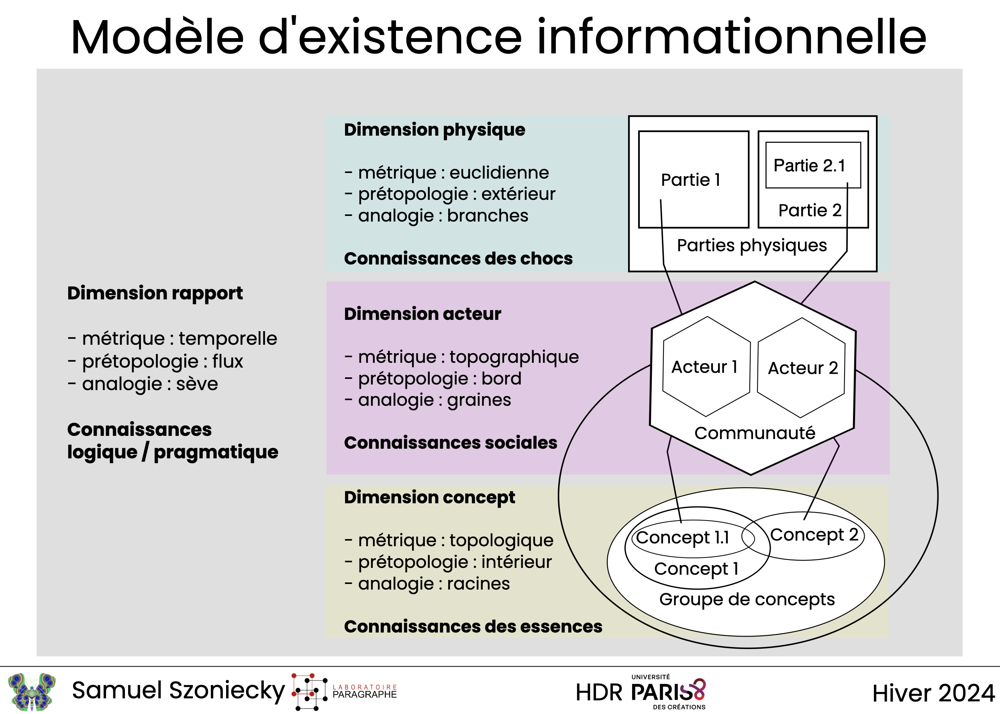

![]()
classDiagram
class Pouvoir["Pouvoir exitentiel"] {
+String Title
+String Description
+Item a comme physique
+Item a comme crible
+Item a comme actant
+Item a comme concept
+Types de pouvoir Type
+Integer Intensité
}
class pulsationExistentielle["Pulsation exitentielle"] {
+String Title
+String Description
+Item A comme pouvoir
+Item Flux
}
class raisonTrajective["Raison trajective"] {
+String Title
+String Description
+Item A comme pulsation existentielle
}
class Temporalitérelativedespulsations["Temporalité relative des pulsations"] {
+Temporalités Temporal Coverage
+Item A comme pulsation existentielle
}
raisonTrajective "1" --> "*" pulsationExistentielle : A comme pulsation existentielle
pulsationExistentielle "0" --> "*" Temporalitérelativedespulsations : A comme flux
pulsationExistentielle "1" --> "*" Pouvoir : A comme pouvoir
Temporalitérelativedespulsations "1" --> "*" pulsationExistentielle : A comme pulsation existentielle
Article pour : Le 4ème paradigme en question
Du texte au diagramme : analyser la symbiose entre acteurs, agents et environnement
Introduction
La multiplication des grands modèles de langage (LLM) et leurs usages de plus en plus nombreux placent les technologies intelligentes (Verlaet, 2020) au cœur des pratiques scientifiques que ce soit pour gérer la production de textes, pour calculer des modèles économiques, biologiques ou physique ou même pour gagner un prix Nobel (Mauger, 2025). Ces “IAs” accentuent encore l’importance du 4ème paradigme de la science présentée par (Tansley et al., 2009) en offrant des capacités nouvelles à l’exploration des données massives qui occupe désormais une place prépondérante dans le processus de découverte scientifique. L’IA devient un consommable incontournable au même titre que le traitement de texte qui a révolutionné l’éditorialisation scientifique il y a plus de trente ans (Biezunski, 1989), ou le CMS (Content MAnagement System) il y a plus de vingt ans (Broudoux et al., 2005). Aujourd’hui, ces outils numériques forment des environnements spécifiques, des milieux (Berque, 2009), dans lesquels nous évoluons en nous “co-développant” (Bachimont, 2020). Humains et machines partagent des écosystèmes communs dont ils sont les acteurs humains (Callon, 2006) ou les agents numériques (Abrami et al., 2014; Balbo et al., 2018; Barkol, 2025). Ils possèdent des compétences spécifiques et des manières d’être (Latour, 2012) qui ne sont pas toujours réciproquement profitables. D’autant moins quand on prend en compte ces environnements dans leurs dimensions géopolitiques (Saleh et al., 2024).
A la question de pourquoi le développement de ces environnements est de plus en plus rapide et global alors qu’ils ne sont pas toujours durable et profitables, mon éditeur de texte (Visual Studio Code + Copilot cf. https://visualstudio.microsoft.com/fr/github-copilot/) me propose de continuer d’écrire la suite de mon article et me propose le texte suivant :
Une accélération technologique non sans conséquences
Le développement rapide et global des environnements numériques s’explique par plusieurs facteurs. Tout d’abord, la convergence des technologies de l’information et de la communication (TIC) a permis une interconnexion sans précédent des systèmes, facilitant ainsi leur adoption à grande échelle (Castells, 2000). Ensuite, la pression économique et sociale pour innover et rester compétitif pousse les acteurs à intégrer ces technologies, souvent sans évaluation approfondie de leur durabilité ou de leur impact à long terme (Schwab, 2017).
Cependant, cette accélération n’est pas sans conséquences. Les infrastructures numériques consomment des ressources énergétiques et matérielles importantes, contribuant à l’épuisement des ressources naturelles et à l’augmentation des émissions de gaz à effet de serre (Bordage & Autissier, 2019). De plus, les inégalités d’accès et de compétences numériques creusent des écarts entre les populations, limitant les bénéfices potentiels pour certains groupes (Van Dijk, 2019).
Face à ces défis, il devient crucial de réfléchir à des approches qui favorisent une symbiose durable entre les acteurs humains, les agents numériques et les environnements. Cela implique de repenser les processus de conception, d’évaluation et de régulation des technologies pour qu’ils intègrent des critères de durabilité, de profitabilité et d’équité.
Je pourrais me contenter de cette réponse et après quelques vérifications de bibliographie et un peu de mise en page, passer à une autre question et ainsi de suite, paragraphe après paragraphe, écrire un article cohérent mais sans doute insipide car reflétant uniquement l’état de l’art statistique des questions abordées.
Je pourrais aussi rentrer dans les détails de cette réponse pour en faire une interprétation précise et questionner :
” non pas la “vérité” d’une connaissance mais son “importance”, non pas son contenu mais le cadrage des pratiques qui conditionnent son statut et ses utilisations possibles. ” (Citton, 2010) p. 30
Par exemple, il est symptomatique de lire dans la conclusion que propose l’IA que “Face à ces défis” d’une “accélération technologique” la solution consiste à créer de nouvelles technologies : “Cela implique de repenser les processus de conception”. Même si cette solution technophile est atténuer par des processus “d’évaluation et de régulation”, l’IA ne propose pas de mettre fin à cette course à la technique. Comment l’en blâmer, qui d’un tant soit peu raisonnable, scierai la branche sur laquelle il est assis… Mais nous supposons là une conscience que cette IA serait capable de convoquer pour justifier son existence et faire en sorte qu’elle perdure. Sans rentrer dans les débats sur l’émergence effective ou non de cette conscience artificielle ou d’une IA générale (https://fr.wikipedia.org/wiki/Intelligence_artificielle_g%C3%A9n%C3%A9rale), retenons tout de même qu’ils posent une question éthique à trancher comme le souligne Alain Cardon :
” le développement puis la mise en exploitation de systèmes psychiques artificiels dotés de consciences intentionnelles doivent nécessairement poser le problème des choix de leurs usages ou bien la décision justifiée de sa non-réalisation. Donc, il faut clairement poser maintenant le problème éthique de l’usage de la conscience artificielle. ” (Cardon, 2018) p. 2
Je pourrais aussi comme le propose Marcello Vitali Rosatti décrypter les approches computationnelles mises en place par les ingénieurs qui ont conçus l’IA que j’utilise, afin de “saisir les présupposés épistémologiques, les implications politiques et culturelles, les visions du monde” (Vitali Rosati, 2025) et ainsi estimer quelles valeurs de l’intelligence sont affirmées et dans quelles hiérarchies sociales elles me placent. C’est sans doute un travail très important a mener face à des pratiques impliquant des formalismes très complexes qu’on fait fonctionner sans questionner leurs sens comme le soulignait Miora Mugur-Schächter, il y a déjà vingt ans dans le domaine de la mécanique quantique en définissant les objectifs de la méthode de conceptualisation relativisée qui :
” élabore un système cohérent et consensuel d’algorithmes de conceptualisation : des algorithmes de génération et développement de sens; à caractère effectif et protégés par construction de toute insertion de faux problèmes ou de paradoxes. ” (Mugur-Schächter, 2006) p. 314
Toutefois, si l’on adhère aux analyses sur le capitalisme cognitif avancé (Corteel, 2025), il est discutable de nous lancer dans un décryptage de technologies qui cherchent ” à favoriser l’intégration des actions entraînant des gains (information) et l’évacuation des actions entraînant des pertes sur les marchés (entropie), par-delà l’échange interindividuel, au niveau de la coopération entre les cerveaux et les IA “. Il nous semble que cette stratégie de décryptage aurait comme effet d’accélérer encore d’avantage l’aliénation de” nos facultés d’invention, de création ou d’innovation ” :
” Car ce qui compte, ce n’est pas ce que j’écris, c’est l’activité cognitive que je génère dans l’échange avec l’IA ; c’est la valeur d’échange immatérielle, dont on m’exproprie en analysant mon activité cognitive. ” (Corteel, 2025)
Je pourrais aussi partir de l’idée que ” les intelligences artificielles génératives ne laissent aucune place aux activités d’expression, d’interprétation, de discussion ou de délibération ” (Alombert, 2023) pour diagnostiquer avec raison les problèmes soulevés par ces technologies intellectuelles :
le modèle mis en œuvre par un outil comme ChatGPT est un modèle purement consumériste, au sein duquel l’usager est réduit à une position de passeur de commande et de consommateur de contenu, privé de la possibilité de participer à la production symbolique (d’images ou de textes) car incapable de comprendre les règles qui permettent la « génération automatique » des contenus ni de remonter aux sources des opérations algorithmiques. (Alombert, 2023)
Relativisons cette position en replaçant par exemple se propos dans un autre contexte, celui de l’alimentation. La citation ci-dessus garde tout son sens si l’on pense aux consommateurs qui se nourrissent de plats ultra-transformés sans connaître ni la recette, ni le mode de fabrication d’un plat : ils ne participent pas ” à la production symbolique ” ou plutôt ils participent uniquement à la production symbolique de la marque du produit qu’il consomment. A l’opposé, les personnes qui cuisinent et mangent les légumes de leur jardin, comprennent parfaitement que la « génération automatique » des légumes n’est pas si automatique que ça et demande beaucoup d’efforts même s’ils s’aident d’un motoculteur, de produits chimiques, d’une communauté… Entre ces consommateurs et ces producteurs, il y a une multitude de relations possibles entre des aliments et leur consommation que chacun de nous composent suivant des agencements plus ou moins équilibrés : pensons à ces boites de soupes qu’Andy Warhol a transformé en œuvres d’art…
Même si dans l’article que je viens de citer, Anne Alombert émet quelques doute quand à l’usage des analogies pour comprendre et analyser un phénomène, celle que nous venons d’utiliser montre toute la complexité inhérente à la consommation d’un produit qu’il soit une carotte ou un chatbot. Au delà d’une analyse des impacts généraux de l’IA sur nos pratiques (Eddekkar et al., 2025), ce sont ces multitudes d’agencements et d’équilibres plus ou moins stables qu’il nous faut étudier pour analyser et comprendre les enjeux du quatrième paradigme de la science. Nous sommes dans un environnement complexe où les IAs deviennent indispensables à la pratique scientifique mais aussi problématique quant à leurs usages pour par exemple produire rapidement un texte sans saveur et contenant des erreurs. Entre l’interprétation critique des productions de ces IAs, le décryptage de leur présupposés épistémologiques et la construction d’automates computationnels au service de l’intelligence collective (Alombert, 2023), je propose dans cet article une méthode de modélisation info-communicationnelle ayant pour ambition d’évaluer la durabilité et la profitabilité réciproque, la symbiose, entre les activités intellectuelles, les agents IA et nos environnements.
Nous nous plaçons dans les perspectives de recherche qu’emprunte (Chateauraynaud & Lamy, n.d.) pour analyser les pouvoirs des algorithmes dans un écosystème sociotechnique. Mais au lieu de privilégier uniquement l’étude de l’environnement matériel dans lequel ils existent, nous nous intéresserons aussi aux relations qu’entretiennent ces matérialités avec nos “intériorités” (Descola, 2005). Notre objectif est de définir un protocole de modélisation et d’analyse de ses relations comme le propose les recherches pour une science de la collaboration humain-IA pour la prise de décision :
” Future research will require longitudinal field studies, shared benchmarks that evaluate collaboration processes rather than accuracy alone, and deeper investigation into how Human–AI teams evolve, adapt, and maintain alignment over time ” (Gonzalez et al., 2026, p. 18)
Nous proposons une méthode pour analyser comment un individu humain ou artificiel évolue dans un son environnement et quelles répercutions cela engendre. Nous concevons ces modélisations et ces analyses comme un travail d’introspection qui cherche à révéler “l’authenticité” (Benbouzid, 2025) de nos pratiques, renforcer notre esprit critique (Jacquemot, 2025) et nous conduire à des choix éthiques (Deleuze, 2003), c’est à-dire des choix dont nous sommes capables de vivre les conséquences.
Dans un premier temps, je montrerai comment modéliser des actions situées (Quéré, 2020) et des protocoles (Sauret, 2017) liés à l’écriture d’un article scientifique, afin de mesurer pour les acteurs, les agents et l’environnement, l’augmentation et la diminution de leurs pouvoirs de discernement, de raisonnement, de résonnance et d’agir (Szoniecky, 2020). J’analyserai ensuite ces mesures pour évaluer des niveaux de symbiose en comparant la réciprocité et la durabilité des fluctuations de puissances.
J’expliquerai ensuite pourquoi ce travail scientifique tend vers un dépassement de la pensée textuelle au profit d’une pensée diagrammatique qui mobilise des “schémas interprétatifs” (Bachimont, 2020) impliquant des capacités de calcul de plus en plus grandes et une adéquation de plus en plus forte entre acteurs et agents.
Avec cet article, je souhaite orienter les réflexions sur l’intelligibilité du numérique vers une prise en compte de l’adéquation durable, profitable et réciproque entre acteurs, agents et environnement. Ce qui nous intéresse ici, c’est de poser les bases d’une discussion sur l’éthique du numérique comprise comme la décision d’exercer ou non les pouvoirs qui sont à notre disposition.
Modéliser les pouvoirs des flux info-communicationnels
Il faudrait sans doute replacer les propos qui vont suivre dans un état de l’art plus consistant qui présenterait comment nous positionnons “les images de pensée” (Caraës & Marchand-Zanartu, 2011) comme des cartographies (Guattari, 1989) issues d’une modélisation des espaces vivants (Aït-Touati et al., 2019), à partir d’une esthétique orientée par les données (Drucker et al., 2020) et d’une sémiotique visuelle spécifique (Dondero, 2020). Mais cela dépasserais grandement le cadre de cet article dont l’objectif principal est de donner une méthode concrète pour analyser les fluctuations de pouvoirs à partir d’une modélisation des flux info-communicationnels qui s’appuie sur les principes de modélisation et de représentation que nous avons présenté dans notre HDR (Szoniecky, 2024).
Pour illustrer notre utilisation de cette méthode de modélisation des communications entre acteurs et agents dans l’environnement numérique, nous prendrons un exemple en lien avec le quatrième paradigme de la science : l’écriture d’un article scientifique. Pour ce faire, nous modéliserons l’écosystème de connaissances en concevant cette pratique comme la définition d’une multitude d’états transitoires dans ce qu’on pourrait nommer une “chronotopologie” (Ferri, 2021). En accord avec les principes que nous avons défini dans notre HDR (Szoniecky, 2024) et du méta-modèle ontoéthique qui en résulte Figure 1, nous représentons ces successions d’états topologiques sous la forme d’une existence informationnelle dans un espace-temps donné. Nous ne détaillerons pas ici les principes théoriques et cartographiques du méta-modèle qui compose les dimensions de l’existence (physique, actant, concept, rapport) corrélées aux métriques (euclidienne, topographique, topologique, temporelle) permettant de les mesurer ; aux concepts prétopologiques (extérieur, bord, intérieur, flux) permettant de les modéliser et aux analogies (branches, graines, racines, sève) permettant de les représenter :

Dans notre HDR, nous avons montrer que ce méta-modèle sert à calculer les complexités d’un écosystème de connaissances, comment les représenter, les explorer, les analyser et définir des objectifs existentiels. Ce qui nous importe ici c’est de montrer que ce méta-modèle sert aussi à calculer des fluctuations de puissances dont les analyses alimenteront des discussions éthiques pour déterminer collectivement : quelles puissances préserver pour atteindre quels états précis de l’écosystème ?
Pour calculer ces fluctuations de puissances, nous utilisons les principes des « pulsations existentielles » (Berque, 2009, p. 402) dans un cycle de sémiose (µ et al., 2015) qui mettent en jeu successivement trois processus correspondant à trois pouvoirs : le pouvoir de discernement (anasémiose), le pouvoir de raisonnement/résonnnance (élaboration sémiotique), le pouvoir d’agir (catasémiose). Aux deux extrémités du cycle des interfaces transforment la matière en pensée (discernement) et la pensée en matière (agir), elles sont les « cribles » (Guattari, 1992) par lesquels passent les « pulsations existentielles » qui plongent dans l’intimité de nos élaborations et rebondissent jusqu’à la surface de nos expressions en élimant les « valeurs superflues » et en se chargeant des « valeurs importantes ». Ces cribles, Descola propose de les structurer à partir de « matrices ontologiques » (Descola, 2005, p. 323) qui définiront les rapports entre physicalités et intériorités. (Hofstadter & Sander, 2013, p. 233) nous expliquent que nous élaborons ces cribles par adoption et création d’un réseau d’analogies de plus en plus complexes. Ces auteurs venant de la sémiologie, de la géographie, de l’anthropologie, de l’intelligence artificielle et de la psychologie s’accordent pour dire qu’il est possible de modéliser ces interfaces, ces cribles, ces rapports, ces réseaux d’analogies qui vont influencer nos affects (Lordon & Lucbert, 2025) pour augmenter ou diminuer nos pouvoirs de discerner, de raisonnement/résonnnance et d’agir.
Nous avons développé un environnement numérique pour modéliser et représenter les fluctuations de pouvoir que produisent les pulsations existentielles. Cet environnement a été expérimenté dans le cadre d’un cours sur l’Ethique des écosystèmes numériques donné en 2025 et 2026 aux étudiants du Master 2 Analyse et Conception des Environnements Humains Numériques (ACEHN). Cet environnement se compose de :
- une base de données Omeka S paramétrée avec 4 modèles de ressources pour définir 4 classes d’objet et leurs relations Figure 2 : des raisons trajectives, des pulsations existentielles, des pouvoirs, des temporalités.
- une application web de gestion de ces objets et de leur visualisation sous forme de diagramme Figure 3

Protocole de modélisation dans Omeka S
Le protocole de modélisation dans Omeka S est simple, il consiste à évaluer l’augmentation ou la diminution des pouvoirs dans les rapports entre les physicalités et les intériorités (pulsations existentielles) qui composent une suite évenementielle d’information et de communication (raison trajective). Par exemple, un changement d’actant dans la pulsation existentielle “consulter une page Web” induit une augmentation du pouvoir d’agir si cet actant est un adulte majeur et une diminution si c’est un enfant mineur puisque ce dernier n’est pas autorisé à voir des pages réservées aux adultes. Autre exemple, l’utilisation du crible “Inspecter” dans un navigateur Web augmente le pouvoir de discernement en montrant les structures HTML d’une page…
Nous avons résumé le protocole de modélisation en quatre étapes.
1. Créer une raison trajective
Cette étape consiste à créer dans Omeka S un item en utilisant le ressource template : Raison trajective. La raison trajective est définie par un nom, une courte description et par une temporalité des flux évenementiels. Créer une raison trajective consiste à organiser les événements qui se produisent dans un environnement. A la manière d’une partition musicale (Stransky & Szoniecky, 2014), la raison trajective va définir les relations temporelles des événements suivant une méthode spécifique. Par exemple, dans le cas qui nous occupe à savoir “La rédaction d’un article scientifique”, nous définisons quatre flux dans l’environnement :
Répondre à un appel à proposition,
Rédiger une proposition d’article,
Ecrire un article scientifique,
Publier un document
Dans ce cas, la succession des flux est organisée de manière causale : il est nécessaire de faire l’action 1 avant l’action 2 etc. Toutefois on peut imaginer bien d’autre manière d’organiser la succession des flux, en utilisant par exemple la méthode de l’effectuation :
“Causation processes take a particular effect as given and focus on selecting between means to create that effect. Effectuation processes take a set of means as given and focus on selecting between possible effects that can be created with that set of means.” (Sarasvathy, 2001)
Quelque soit la méthode utilisée pour organiser la succession des événements ceux-ci sont modélisés par une pulsation existentielle et un ordre qui correspond à la position temporelle de l’événement dans la raison trajective.
2. Créer des pulsations existentielles
Dams Omeka S, cela consiste à créer un item en utilisant le ressource template : Pulsation existentielle. Une pulsation existentielle est modéliser par un ensemble de pouvoirs et par des relations avec d’autres pulsations. Alors que la temporalité des flux dans la raison trajective est déterminée par une succession temporelle d’états suivant une règles spécifique comme la causalité, dans les pulsations existentielles les relations entre les flux s’organisent par une temporalité relative : avant, pendant ou après. Cette gestion temporelle entre une succession des flux pour les raisons trajectives et une temporalité relatives pour des pulsations exitentielles, permet tout à la fois de définir l’ordre des flux (raison trajective) et les liens entre flux (pulsation existentielle).
3. Créer les pouvoirs existentielles
Pour créer un pouvoir existentiel dans Omeka S, il faut créer un item en utilisant le ressource template : Pouvoir existentiel
Un pouvoir existentiel se définie Ne pas oublier de définir l’intensité du pouvoir entre :
-100 = diminution extrême du pouvoir 0 = pas de changement 100 = augmentation extrême du pouvoir Il y a quatre types de pouvoir existentiel ayant chaucun des propriétés particulières :
Pouvoir de discerner : physique -> crible -> actant -> concept Pouvoir de résonnance : concept -> analogie -> concept Pouvoir de raisonnement : concept -> logique -> concept Pouvoir d’agir : concept -> actant -> crible -> physique
Ne pas oublier de définir l’intensité du pouvoir entre : - -100 = diminution extrême du pouvoir - 0 = pas de changement - 100 = augmentation extrême du pouvoir
Il y a quatre types de pouvoir existentiel ayant chaucun des propriétés particulières : - Pouvoir de discerner : physique -> crible -> actant -> concept - Pouvoir de raisonner : concept -> actant -> concept - Pouvoir de résonner : concept -> concept - Pouvoir de raisonabilité : actant -> concept - Pouvoir d’agir : concept -> actant -> crible -> physique
Associer les pouvoirs existentielles aux pulsations existentielles
Dans omk, dans l’item Pulsation existentielle, ajouter les items Pouvoir existentiel
Associer les pulsations existentielles à la raison trajective
Dans omk, dans l’item Raison trajective, ajouter les items Pulsation existentielle
Vérifier la modélisation
Ce rendre à la page : https://acehn.jardindesconnaissances.fr/pulsationsExistentielles/index.html Choisir la raison trajective dans la liste déroulante du haut de la page.
- une application pour vérifier et visualiser les pulsations existentielles

- un répertoire GitHub pour gérer les sources et la documentation du projet : pulsationsExistentielles
À chaque pulsation existentielle, à chaque événement de nos vies, à chaque pli, ces pouvoirs augmentent ou diminuent, accentuant ainsi des rapports privilégiés, d’autres, plus secrets, et même certains qui nous restent inconnus. Ainsi, la pulsation varie continuellement, elle est parfois instantanée par exemple quand on rit, elle peut aussi prendre beaucoup de temps quand un souvenir longtemps oublié émerge petit à petit ; elle devient un métier quand à force de pratiquer un geste particulier, celui-ci s’automatise. Ces pulsations se transforment parfois en bêtises ou en inconscience quand le pouvoir d’agir prend le pas sur les pouvoirs de discerner et de raisonner en occultant leurs pliages potentiels. Suivant leurs fréquences, les pulsations existentielles forment des ondes dont la vitesse de propagation est fonction de leur longueur (distance séparant deux maxima consécutifs de l’amplitude entre physicalités et intériorité) et du milieu dans lequel elles se déploient. La catégorisation et l’analyse de ces ondes renvoient globalement à une réflexion sur la modélisation de l’esprit qui dépasse le cadre de ce propos, mais que nous illustration par le diagramme suivant Figure 4 :
Il découle de ces principes que le processus de modélisation des connaissances conçues en tant qu’existences informationnelles est assimilable à un calcul des puissances et de leurs évolutions :
« Si bien qu’à la question : ” Cet être existe-t-il ? ” il est prudent d’admettre qu’on ne peut guère répondre selon le couple du Oui ou Non, mais bien plutôt selon celui du Plus ou Moins. » (Souriau et al., 2009)
Ces opérations d’augmentation et de diminution s’appliquent aux puissances de discernement, de raisonnement et d’action d’une existence informationnelle et par la même définissent ce qu’elle peut, c’est-à-dire son éthique :
« Le point de vue d’une éthique c’est : de quoi es-tu capable, qu’est-ce que tu peux ? »1
Notre huitième et dernier principe que nous appelons principe ontoéthique reprend l’idée que défend Deleuze concernant la corrélation entre ontologie et éthique c’est à dire la corrélation entre dimensions de l’existence et genres de connaissances chez Spinoza. Ainsi la première dimension de l’existence, celle des parties extensives est corrélée au premier genre de connaissance celui des idées inadéquates, la deuxième dimension celle des rapports est corrélée aux notions communes qui forme le deuxième genre de connaissance et la troisième dimension existentielle, celle des essences, est corrélée au troisième genre de connaissances celui de l’intuition. Nous utilisons, une quatrième corrélation qui n’est pas présentée par Deleuze, mais qui reprend les propositions de (Callon, 2006) pour définir la dimension des actants corrélés aux connaissances sociales.
À partir des principes que nous venons du définir nous élaborons un métamodèle conçu comme « un générateur de modèles qualitatifs » (Thom, 1975, p. 372) que nous utilisons pour nos analyses de l’information et la communication.
Analyser les fluctuations de puissances pour évaluer la symbiose
Evaluer la valeur d’une puissance : “Autrement dit, au lieu de tenir les valeurs pour un donné que la sociologie ou la philosophie doivent mettre au jour de façon empirique, il convient de les appréhender comme des principes d’action partagés qui s’élaborent et se découvrent dans le cours de l’activité pratique dans lequel l’usage qui en est fait se réalise.” (Ogien, 2014)
Exemple de quantification des rapports humain ai (Riedl & Weidmann, n.d.)
Enrichissement du calcul de la complexité à partir d’une modélisation d’une existence informationelles
Contre exemple d’analyse du pouvoir de décision :
Les profils obtenus par l’IA prennent en considération la vitesse des sujets, leur précision, leur variabilité et leurs évolutions au cours du test, y compris les modifications du comportement après une erreur. (Suarez & Eynard, 2025)
sur les questions de puissances psychiques et sur le processus de la représentation mentale
“La topologie de l’espace de représentation est en effet déterminée par de multiples contraintes qui limitent son codéploiement analogique, entraînant la formation de « plis », à commencer par les « pliages » induits par le format limité de la fenêtre de présence et les « plissements » entre mondes possibles.”
“La puissance harmonique d’un objet peut être évaluée par l’« étendue » de la reconfiguration de l’espace de représentation que sa présentation (par rencontre et/ou projection) suscite.”
cf. (Plagnol, 2025)
Du texte au diagramme
La lecture et l’écriture de textes sont les bases du travail scientifique. Cependant, on observe une importance grandissante des diagrammes notamment dans les thèses où l’on trouve de plus en plus de représentations graphiques même dans les disciplines de sciences humaines et sociales. La démocratisation des outils de dessin vectoriel et l’émergence de plateforme facilitant la production de dataviz (Louâpre & Szoniecky, 2017) ont sans doute contribué au développement de ces expressions graphiques et spatiales qui pour David Rabouin sont au cœur du discours scientifique : “Les écritures symboliques qui parsèment désormais n’importe quel écrit scientifique, ne sont d’ailleurs […] qu’un prolongement de ces représentations spatiales.” (Rabouin, 2010) p. 42
L’importance de ces diagrammes se manifeste par des recherches spécifiques ((Batt, 2005; Battistini, 2004; Iafrate, 2015; Jedrzejewski, 2007; Voss, 2019)) qui prennent aujourd’hui la forme d’une “diagrammatologie” pour “rendre visibles les vecteurs de forces tels qu’ils s’opposent et s’entremêlent dans la formation des formes.” (Dahan-Gaida, 2023) ou d’une “ingénierie sémiotique des systèmes diagrammatiques” (Ferri, 2020) qui a pour vocation de modéliser : “les opérations qui excèdent toute formalisation algorithmique”.
La présence des diagrammes dans les discours scientifique reflète la volonté des chercheurs de communiquer des informations autrement que par le texte :
” Alors que les symboles signifient, les diagrammes se caractérisent par leur générativité, leur capacité à produire autre chose que ce qu’ils représentent. Ils ne sont pas de simples instruments d’expression de la pensée mais participent à la production de la connaissance. Ce sont des inscriptions matérielles dotées d’un sens qui conserve des traces non verbales. ” (Dahan-Gaida, 2023)
Le texte et le diagramme se différencient d’une part par leurs formes graphiques, l’une basée sur une succession linéaire de chaînes de caractères issues d’un alphabet et l’autre construite à partir d’un vocabulaire graphique plus global : points, lignes, plans. La différence se fait d’autre part sur l’activité cognitive que ces deux formes génèrent, l’une basée sur une construction linéaire du sens caractères après caractères, mots après mots… l’autre basée sur une compréhension :
” qui ne se saisit pas par une succession d’inférences logiques, mais globalement, intuitivement, dans une dimension intellectuelle et corporelle qui passe par le geste. ” (Jedrzejewski, 2007) p. 184
Cette communication spécifique du diagramme s’opère par un double pouvoir : ” puissance de modélisation et pouvoir de générativité, il permet de comprendre les dynamiques d’émergence et de transformation des formes et de la pensée ” (Dahan-Gaida, 2023).
Dans le contexte du 4ème paradigme, les diagrammes sont efficaces pour représenter les masses d’informations complexes générées par les écosystèmes de connaissances et donnent aux chercheurs les moyens de construire des interprétations sur ces informations. Mais au-delà de ces fonctions heuristiques, les diagrammes offrent un langage pour communiquer avec les agents artificielles autrement que par le texte. Par exemple, nous avons montré comment des diagrammes basés sur des modèles prétopologiques pouvaient servir à gérer les écosystèmes de l’Internet des Objets en offrant un vocabulaire manipulable par les humains et les machines (Szoniecky & Toumia, 2020).
Les enjeux de la diagramatisation des communications entre humains et machines, entre acteurs et agents, sont fondamentaux. Transformer ces échanges du texte vers le diagramme ouvre la voie à une communication qui ne se base plus sur une vectorisation du texte mené par les agents mais sur une modélisation topologique à l’inititative des acteurs qui inclue non seulement les formalismes logiques mais aussi :
“le contenu non logique d’une connaissance phénoménologique, c’est-à-dire la structure qualitative sur laquelle s’appuie la faculté intuitive non logique” (Ferri, 2020)
Ce passage par la topologie donne aux acteurs les moyens d’utiliser les capacités des diagrammes de représenter “des rapports de force qui constituent le pouvoir”((Khatchatourov, 2017) p. 67) et par la même de se positionner en tant qu’individu responsable, autonome et authentique car :
” Ce qui compte désormais n’est pas la proposition, mais le lieu, le topos qui a sa propre vie organique et qui impose ses modes de raisonnement. Par défaut, la logique immanente d’un topos est intuitionniste : le tiers exclu n’est plus valable, ni le mode de démonstration par l’absurde.” (Jedrzejewski, 2007) p. 183
Le diagramme implique nécessairement le positionnement d’un acteur dans un champ de force (Chateauraynaud, 2011) et l’interrogation de ce qui engage cet acteur :
Derrière cette question se joue une réflexion éthique sur le rapport à soi dans l’acte d’écrire, qui renvoie à une notion centrale de la philosophie morale contemporaine : l’authenticité, entendue comme cet idéal éthique qui renvoie à la capacité d’un individu à vivre en accord avec lui-même, en restant fidèle à ce qu’il reconnaît comme constitutif de son identité. (Benbouzid, 2025)
Pour mener cette recherche de l’authenticité, le diagramme, en tant qu’expression d’un topos, est sans doute une forme d’écriture plus féconde que le texte pour gérer la complexité des flux info-communicationnels entre acteurs, agents et environnements. Encore faut-il définir quelles formes prend ce diagramme ? Quelles topologies sont à l’oeuvre dans sa construction ? Quelles analyses permettent-ils ?
Vers une éthique symbiotique
développer sur ces bases « des infrastructures […] destinées à faciliter les processus d’interprétation, de délibération et de prise de décision collective » (Stiegler & Supiot, 2020) cité par (Alombert, 2023) : ça s’appelle une université
une « théorie pragmatiste » aux termes de laquelle l’habitude est un facteur qui permet d’identifier des « mécanismes sociaux » de niveaux de complexité ou d’agrégation faible et « dans lesquels – dans certaines circonstances – une cause X tend à produire un effet Y dans la sphère des relations sociales humaines » (Ogien, 2014)
« l’explication des faits sociaux comme les structures des réseaux sociaux, les structures de la ségrégation résidentielle, les croyances communes, les goûts culturels, les manières courantes d’agir, exige non pas de les rapporter à d’autres faits sociaux mais de décrire en détail les mécanismes par lesquels ils sont produits ». (Ogien, 2014)
Dans l’écologie pragmatiste proposée par É. Hache, c’est en regard de la responsabilité vis-à-vis du futur que les citoyens d’aujourd’hui doivent peser les décisions qu’ils prennent pour résoudre les questions d’intérêt général qui se posent aux sociétés développées. (Ogien, 2014)
La seule façon d’y remédier consiste, selon J. Dewey (2010a, p. 283), à inciter les citoyens ordinaires à participer pleinement à l’activité politique en se constituant en Public afin de réunir « les conditions auxquelles la Grande Société pourrait devenir une Grande Communauté, à savoir une société dans laquelle les conséquences toujours plus grandes et confusément ramifiées des activités sociales seraient connues au sens plein de ce mot, de sorte qu’un Public organisé et articulé en viendrait à naître ». (Ogien, 2014)
En un mot, J. Dewey prône l’amélioration des conditions du débat public et affirme que cela « dépend essentiellement de la libération et du perfectionnement des processus d’enquête et de la dissémination de leurs conclusions »(ibid., p. 311). (Ogien, 2014)
décrire en détail et individuellement l’intensité de chaque pulsation, de chaque analogie, les mettre en commun pour les comparer et se situer = validation d’un échantillon pour des statistiques psychologiques… mais avant tout = prise de conscience de son positionnement, de son authenticité = connais-toi toi même
References
Abrami, G., Amalric, M., Amblard, F., Anselme, B., Banos, A., Beck, E., Becu, N., Blanpain, B., Caillault, S., Corson, N., Daudé, E., Debolini, M., Delay, E., Duraffour, F., Gaudieux, A., Gaudou, B., Houet, T., Langlois, P., Laperrière, V., … Vannier, C. (2014). Modélisation multi-Agents appliquée aux Phénomènes Spatialisés. 258. https://halshs.archives-ouvertes.fr/cel-01090631/document
Aït-Touati, F., Arènes, A., & Grégoire, A. (2019). Terra forma : manuel de cartographies potentielles. Éditions B42.
Alombert, A. (2023). Panser la bêtise artificielle. Appareil, 26. https://doi.org/10.4000/appareil.6979
Bachimont, B. (2020). Manifeste pour l’intelligibilité du numérique. Revue Intelligibilité du numérique. https://intelligibilite-numerique.numerev.com/manifeste
Balbo, F., Berreby, F., Boissier, O., Bonnemains, V., Bourgne, G., Ganascia, J.-G., Mermet, B., Simon, G., Swarte, T. de, Tessier, C., & Voyer, R. (2018). Ethique et agents autonomes. ANR-13-CORD-0006, 49. https://ethicaa.greyc.fr/media/files/ethicaa.white.paper.pdf
Barkol, D. (2025). L’IA agentique expliquée : Un cadre philosophique pour comprendre les agents d’IA, par David Barkol. https://intelligence-artificielle.developpez.com/actu/368113/L-IA-agentique-expliquee-Un-cadre-philosophique-pour-comprendre-les-agents-d-IA-par-David-Barkol/
Batt, Noëlle. (2005). Penser par le diagramme : De gilles deleuze à gilles châtelet. Presses universitaires de Vincennes.
Battistini, M. (2004). Symboles et allégories. Hazan.
Benbouzid, B. (2025). Écrire à l’université à l’heure des IA génératives : trouble dans l’auctorialité (1/2). AOC media - Analyse Opinion Critique. https://aoc.media/analyse/2025/05/06/ecrire-a-luniversite-a-lheure-des-ia-generatives-trouble-dans-lauctorialite-1-2/
Berque, A. (2009). Ecoumène : Introduction à l’étude des milieux humains. Belin.
Biezunski, M. (1989). Programmer du texte. https://wicri-demo.istex.fr/Wicri/Sic/H2PTM/fr/index.php/H2PTM_(1989)_Biezunski
Bordage, F., & Autissier, I. (2019). Sobriété numérique: Les clés pour agir. BUCHET CHASTEL.
Broudoux, E., Grésillaud, S., Crosnier, H. L., & Lux-Pogodalla, V. (2005, September 18). Construction de l’auteur autour de ses modes d’écriture et de publication.
Callon, M. (2006). Sociologie de l’acteur réseau (M. Akrich & B. Latour, Eds.; pp. 267–276). Presses des Mines. https://books.openedition.org/pressesmines/1201
Caraës, M.-H., & Marchand-Zanartu, N. (2011). Images de pensée. RMN.
Cardon, A. (2018). Au-delà de l’intelligence artificielle. ISTE Editions.
Castells, M. (2000). Toward a sociology of the network society. Contemporary Sociology, 29(5), 693–699. https://doi.org/10.2307/2655234
Chateauraynaud, F. (2011). Argumenter dans un champ de forces : essai de balistique sociologique. Éd. Pétra.
Chateauraynaud, F., & Lamy, J. (n.d.). Les algorithmes et leurs écologies. Une sociologie du numérique attentive à la matérialité des dispositifs dont dépendent les boucles computationnelles.
Citton, Y. (2010). L’avenir des humanités : Economie de la connaissance ou cultures de l’interprétation ? Editions La Découverte.
Corteel, M. (2025). 6. Le capitalisme cognitif avancé. Poche / Sciences humaines et sociales, 167–195. https://shs.cairn.info/article/DEC_CORTE_2025_01_0167
Dahan-Gaida, L. (2023). Introduction. L’invention par-delà science et littérature. L’Imaginaire du Texte, 9–19. https://shs.cairn.info/l-art-du-diagramme--9782379242915-page-9
Deleuze, G. (2003). Spinoza. : Philosophie pratique ([Nouv. éd.]). Editions de Minuit.
Descola, P. (2005). Par-delà nature et culture. NRF : Gallimard.
Dondero, M. G. (2020). Les langages de l’image : de la peinture aux big visual data. Hermann.
Drucker, J., Mignon, M., & Bortolotti, M.-M. (2020). Visualisation: L’interprétation modélisante (1er édition). B42.
Eddekkar, Z., Machrafi, B., & El Maaroufi, S. (2025). Impact de l’intelligence artificielle : Revue de littérature systématique. African Scientific Journal, Volume 03(numéro 33). https://doi.org/10.5281/zenodo.17736965
Ferri, F. (2020). Ingénierie sémiotique et modélisation diagrammatique. Au-delà du modèle de Turing. Revue Intelligibilité du numérique. http://intelligibilite-numerique.numerev.com/numeros/n-3-2022/2629-ingenierie-semiotique-et-modelisation-diagrammatique-au-dela-du-modele-de-turing
Ferri, F. (2021). Science opérative et ingénierie sémiotique: des machines graphiques à la morphogenèse organique [PhD thesis].
Gonzalez, C., Donahue, K., Goldstein, D. G., Heidari, H., Jalali, M. S., Schelble, B., Singh, A., & Woolley, A. W. (2026). Toward a science of humanAI teaming for decision-making: A complementarity framework. PNAS Nexus, pgag030. https://doi.org/10.1093/pnasnexus/pgag030
Guattari, F. (1989). Cartographies schizoanalytiques. Galilée.
Guattari, F. (1992). Chaosmose. Galilée.
Hofstadter, D., & Sander, E. (2013). L’analogie : Coeur de la pensée. Odile Jacob.
Iafrate, F. (2015). From Big Data to Smart Data. ISTE Ltd.
Jacquemot, C. (2025). Intelligence artificielle / intelligence humaine : Qui contrôle qui ? Vols. Tome 66 (pp. 51–64). Lefebvre-Dalloz. https://hal.science/hal-05355570
Jedrzejewski, F. (2007). Diagrammes et catégories [PhD thesis]. http://tel.archives-ouvertes.fr/tel-00193292/en/
Khatchatourov, A. (2017). Big Data entre l’archive et le diagramme. 21 pages, pages 67–87. https://doi.org/10.15122/ISBN.978-2-406-07064-1.P.0067
Latour, B. (2012). Enquêtes sur les modes d’existence : Une anthropologie des modernes. Editions La Découverte.
Lordon, F., & Lucbert, S. (2025). Chapitre 18. Politique du symbolique. Sciences humaines et sociales, 411–427. https://shs.cairn.info/article/DEC_LORDO_2025_01_0411
Louâpre, M., & Szoniecky, S. (2017). Outils pour une modélisation de l’interprétation des archives numériques (Systèmes d’information, web et société). ISTE éditions.
Mauger, C. (2025). Pourquoi l’IA a-t-elle gagné un prix Nobel de physique ? https://www.mediapart.fr/journal/culture-et-idees/040125/pourquoi-l-ia-t-elle-gagne-un-prix-nobel-de-physique
Mugur-Schächter, M. (2006). Sur le tissage des connaissances. Hermes Science Publications.
Ogien, A. (2014). Pragmatismes et sociologies. Revue française de sociologie, 55(3), 563–579. https://doi.org/10.3917/rfs.553.0563
Plagnol, A. (2025). Intuitions harmoniques dans un univers mental. PSN, 23(1), 73–93. https://shs.cairn.info/revue-psn-2025-1-page-73
Quéré, L. (2020). Action située et perception du sens (M. De Fornel, Ed.; pp. 301–338). Éditions de l’École des hautes études en sciences sociales. http://books.openedition.org/editionsehess/10705
Rabouin, D. (2010). Vivre ici, spinoza, ethique locale (1st ed.). Presses Universitaires de France - PUF.
Riedl, C., & Weidmann, B. (n.d.). Quantifying human-ai synergy.
Saleh, I., Szoniecky, S., & Ghenima, M. (2024). Frontières numériques 2023.
Sarasvathy, S. D. (2001). Causation and effectuation: Toward a theoretical shift from economic inevitability to entrepreneurial contingency. The Academy of Management Review, 26(2), 243–263. https://doi.org/10.2307/259121
Sauret, N. (2017). Epistémologie du modèle. Sens Public. http://sens-public.org/article1287.html
Schwab, K. (2017). The Fourth Industrial Revolution (1er édition). Portfolio Penguin.
Souriau, É., Stengers, I., & Latour, B. (2009). Les différents modes d’existence suivi de Du mode d’existence de l’oeuvre à faire (Nouvelle édition). Presses universitaires de France.
Stiegler, B., & Supiot, A. (2020). Bifurquer: "il n’y a pas d’alternative". Éditions les Liens qui libèrent.
Stransky, L., & Szoniecky, S. (2014, June 4). XIXe congrès de la SFSIC, Penser les techniques et les technologies. https://hal-univ-paris8.archives-ouvertes.fr/hal-01098436
Suarez, S., & Eynard, B. (2025). MindPulse : un nouvel outil pour mesurer capacités décisionnelles et degré de vigilance. Revue Défense Nationale, HS16, 164–172. https://doi.org/10.3917/rdna.hs16.0164
Szoniecky, S. (2020). Conception d’un crible pour mesurer collectivement les impacts écologiques de l’activité. Les Cahiers du numérique, 16(2-3-4), 175–199. https://doi.org/10.3166/LCN.2020.007
Szoniecky, S. (2024). Modéliser des écosystèmes de connaissance [PhD thesis]. https://hal.science/tel-05063347
Szoniecky, S., & Toumia, A. (2020). Design de connaissances dans l’Internet des Objets : Blockchain et réfrigérateur connecté. Communication management, Vol. 17(1), 39–52. https://www.cairn.info/revue-communication-et-management-2020-1-page-39.htm
Tansley, S., Tolle, K., & Hey, T. (2009). The fourth paradigm: Data-intensive scientific discovery. Microsoft Pr.
Thom, R. (1975). D’un modèle de la science à une science des modèles. Synthese: An International Journal for Epistemology, Methodology and Philosophy of Science, 31(2), 359–374.
Van Dijk, J. (2019). The Digital Divide. Polity Press.
Verlaet, L. (2020). Le numérique comme artefact technoscientifique : une «r-évolution» paradigmatique ? Revue Intelligibilité du numérique. https://intelligibilite-numerique.numerev.com/numeros/n-6-2024/2931-le-numerique-comme-artefact-technoscientifique-une-r-evolution-paradigmatique
Vitali Rosati, M. (2025). Manifeste pour des Études Critiques de l’Intelligence. https://ceen.hypotheses.org/1929
Voss, D. (2019). IV. Diagrammes : usages multiples. Hermann. https://www.cairn.info/agencer-les-multiplicites-avec-deleuze--9782705695774-page-53.htm
µG., Edeline, F., & Klinkenberg, J.-M. (2015). Principia semiotica : Aux sources du sens. Les impressions nouvelles éditions.
Footnotes
Cours de Deleuze du 09/12/1980 http://www2.univ-paris8.fr/deleuze/article.php3?id_article=137↩︎